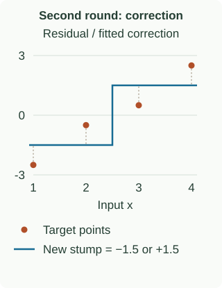

Gradient Boosting: Fit the Remaining Error
Gradient boosting adds a correction to the current prediction. Start with a regression example where the correction is easy to see; then change the loss and ask how the correction changes.
Improve four predictions with one stump
The input values are 1, 2, 3, 4 and their targets are 2, 4, 8, 10. For squared error, start by predicting the mean target, 6, everywhere. Call that starting model $F_0$.
Target minus prediction gives residuals −4, −2, +2, +4. A stump splitting the input at 2.5 groups the first two rows and the last two. Its mean residuals are −3 on the left and +3 on the right. Call this correction $h_1$.
Use learning rate 0.5, meaning add half the correction. The new prediction $F_1$ is 4.5 on the left and 7.5 on the right:
| $x$ | $y$ | $y-F_0$ | $h_1$ | $F_1$ | $y-F_1$ |
|---|---|---|---|---|---|
| 1 | 2 | −4 | −3 | 4.5 | −2.5 |
| 2 | 4 | −2 | −3 | 4.5 | −0.5 |
| 3 | 8 | 2 | 3 | 7.5 | 0.5 |
| 4 | 10 | 4 | 3 | 7.5 | 2.5 |

Mean squared error falls from 10 to 3.25. The next tree uses the new residuals −2.5, −0.5, +0.5, +2.5. Reusing the original residuals would ignore the improvement just made.
Fit the next tree to what is still wrong
The new targets are $[-2.5,-0.5,0.5,2.5]$. Evaluate the three possible midpoint splits on this new target vector. Splits at 1.5 and 3.5 each leave residual-target SSE $14/3\approx4.6667$. The split at 2.5 has left mean −1.5, right mean +1.5, and SSE 4, so it wins again.

Add half of this second correction to the existing predictions:
On the left, $4.5+0.5(-1.5)=3.75$; on the right, $7.5+0.5(1.5)=8.25$. The next residual vector is $[-1.75,0.25,-0.25,1.75]$. Training MSE becomes
The same split happened to win twice, but its leaf values changed. Future rounds must search again: they see the latest residual pattern. At prediction time, the deployed model adds the baseline and both stored, scaled stumps; it does not know a new row’s true target and cannot compute a new residual for it.
What if the first learning rate were 1 instead of 0.5?
The first predictions would be $6-3=3$ and $6+3=9$. The four residuals would be −1, +1, −1, +1, giving training MSE 1. That is lower than the first shrunken update’s 3.25. Shrinkage deliberately takes a smaller step; its value is assessed through the entire training path and validation performance, not by demanding the lowest training error after one tree. Subsequent trees would also see a different residual vector.
All numbers above describe this four-row training example. A decrease in training MSE does not establish improved prediction on unused data. The standard-library reproduction enumerates candidate splits with exact fractions, checks the squared-error gradients, and writes the two-round trace and both figures:
python3 blog/ml/boosting/figures/boosting_two_rounds.pyStep through the changing training problem
The controls fit fresh least-squares stumps to the latest residuals on the same four rows. Compare learning rates: the whole fitted path is recomputed when the rate changes. Predict the next correction before clicking Next round.
Round 1 of 6. Split at x < 2.5; correction leaves −3 and +3. Training MSE: 3.25.
| x / y | Before | Residual target | New tree | After |
|---|---|---|---|---|
| 1 / 2 | 6 | −4 | −3 | 4.5 |
| 2 / 4 | 6 | −2 | −3 | 4.5 |
| 3 / 8 | 6 | 2 | 3 | 7.5 |
| 4 / 10 | 6 | 4 | 3 | 7.5 |
Why the residual is the right target here
Let $\ell(y_i,F)$ be the loss of row $i$ when its predicted score is $F$. Its derivative asks: if this prediction increased a little, would the loss rise or fall? The negative derivative gives a direction that reduces loss.
At round $t$, evaluate this derivative at the current prediction $F_{t-1}(x_i)$. Call the resulting correction target $r_{it}$:
For half squared error, $\ell(y,F)=\tfrac12(y-F)^2$, the derivative is $F-y$, so its negative is $y-F$: the residual. A tree approximates these row-level directions with a shared constant in each leaf. It cannot generally choose every row’s change independently.
Keep structure, leaf values, and step size separate
- Start with the best constant prediction for the loss.
- Compute correction targets at the current predictions.
- Fit a regression tree to those targets.
- Choose leaf values for the original loss, then add their learning-rate-scaled corrections.
For squared error, the leaf value is its mean residual. Other losses can require a refined leaf update.
What does refining a leaf value mean mathematically?
Let $R_{jt}$ be the rows in leaf $j$ at round $t$, and $\gamma$ a candidate constant added to all their current scores. Choose the value $\gamma_{jt}$ minimizing their original loss:
Then add the learning rate times that value. This leaf-wise optimization differs from using fitted gradient targets directly. A Newton step approximates the optimization using slope and curvature; the later Newton chapter works one out.
What does “gradient descent in function space” mean?
Ordinary parameter optimization changes coefficients. Here, consider the vector of current predictions on the training rows. The loss gives a desired direction for each component of that vector. A shallow tree cannot represent an arbitrary vector, so we fit a tree to approximate those desired changes. Adding that fitted function updates both the training predictions and predictions for new inputs.
This explains why a pseudo-residual is a training target, not a new observed label. It also explains why a small tree with nonzero fitting error can still help: its correction need only align usefully with the desired direction. The fitted structure, optimized leaf values, and learning rate are separate decisions.
Train once; sum the stored corrections at inference
Here $f_t$ is the stored correction tree with its chosen leaf values, $\eta$ is the learning rate, and $T$ is the selected round count. For varying rates, put $\eta_t$ inside the sum. At inference, do not recompute residuals or refit trees: a new row has no known target. Omitting the initial prediction or forgetting shrinkage changes the model.
Control the path taken by successive corrections
Smaller learning rates usually need more rounds. Equal learning-rate-times-round-count products do not imply equal models, because each round’s targets depend on earlier updates.
Depth, leaf support, subsampling, and validation-based early stopping control the fit. A sum of stumps on the original inputs models separate feature effects; it cannot express arbitrary interactions such as XOR. Deeper trees can, but also offer more ways to fit noise.
What changes when the target is a class?
The residual $y-F$ worked because we chose squared error. For classification we need a probability model and a loss defined on it. The next chapter builds that change carefully: start with a score, convert it to probability, then differentiate the loss with respect to the score.
Other losses also change the correction targets and leaf values. After the classification example, we will calculate absolute-error and quantile updates rather than treating every task as ordinary residual fitting.
Sources and next steps
- Friedman: Greedy Function Approximation — The functional-gradient framework and loss-specific leaf updates.
- scikit-learn: Gradient boosting — Regression, classification, and regularization behavior.